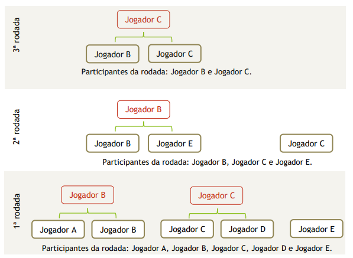
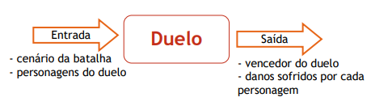

O jogo de batalha entre personagens baseados na Terra-Média que é o mundo do Senhor dos Anéis. A batalha ocorrepor turnos de forma automáticano formato de todos contra todos, considerando as características dos personagens. Cadapersonagem é de uma naçãoe possui 5 habilidades, conforme descrito a seguir.
As habilidadesque os personagens possuem são força, velocidade, precisão, armadurae recuperação. Além da nacionalidade e das 5 habilidades, o personagem possui seus pontos de energia e um nome para identificá-lo ao longo de suas interações no jogo. No início do jogo, o personagem possui 100 pontosde energia e outros 100 pontos de habilidadesque devem ser distribuídos entre as habilidades da forma que o jogador preferir.
Neste jogo, foram selecionadas as seguintes naçõesda Terra-Média:Orc Snaga,Uruk-hai,Cavaleirode Rohan, Guerreiro de Gondor, Hobbit, Elfo da Floresta, Elfo de Lothlórien e anão.A casa de cada nação é, respectivamente, Cirith Ungol, Portão Negro, Abismo de Helm, Minas Tirith, OCondado, Floresta das Trevas ou Mirkwood, Caras Galadhon ou Cidade das Árvorese Colinas de Ferro.A Tabela 1descrevea ligação entre cada nação e a sua casa
| Nação | Casa |
|---|---|
| Orc Snaga | Cirith Ungol |
| Uruk-Hai | Portão Negro |
| Cavaleiro de Rohan | Abismo de Helm |
| Guerreiro de Gondor | Minas Tirith |
| Hobbit | O condado |
| Elfo da Floresta | Floresta das Trevas |
| Elfo de Lothlórien | Caras Galadhon |
| Anão | Colinas de Ferro |
A batalha é realizada em um cenário fixo no qual podem ser alocados até oito jogadores, sendo que só pode haver um personagem de cada nação. O cenário é fixo porque a batalha inteira ocorre neste único cenário escolhido. Dentre os cenários possíveis, o jogo pode definirqualquer uma das oito casasdas nações
Não existem alianças e “amizades” entre os personagens, portanto eles se enfrentam em duelos de um contra o outro em cada rodadae o vencedor avança para a próxima rodada. No início da rodada, ospersonagens são distribuídosaleatoriamente em pares para realizarem a batalhae, caso a quantidade de personagens na batalha seja ímpar, um deles ficará fora da batalha e se classificará automaticamente para a rodada seguinte.Os vencedores de uma rodada são novamente distribuídos aleatoriamente para se enfrentarem em uma nova batalha. As rodadas são repetidas de acordo com a quantidade restante de personagens na arena, até que ocorra a batalha finale seja definido um personagem como o vencedor.O jogadorque “sobrou” na rodada anterior não pode sobrar novamentena rodada seguinte. AFigura 1exemplifica um cenário com cinco jogadores.
A batalha é realizada em turnos de duelos diretos entre dois personagens, conforme foi descrito anteriormente. Porém, é preciso descrever com mais detalhes como se deve determinar o vencedor de cada duelo.Antes, deve-se observar que um duelo possui como informações de entrada: o cenário da batalha e os dois personagens do confronto com as suas características. Após o confronto, a informação de saída é o vencedor do confronto com os danos que sofreu e infringiu.
O confronto ocorre em turnos no qual cada personagem faz uma jogada que pode ser ataque, defesa ou movimentação em direção ao adversário.O ataque é o golpe desferido pelo personagem no adversário. O golpe possui uma probabilidade de atingir o adversário e essa probabilidade é calculada de acordo com a sua habilidade naquele tipo de ataque. O ataque pode ser do tipo:
Considera-se que o ataque atingiu o adversário se ele estiver dentro do raio de ação dos tipos de ataques previstos. Portanto, não é possível realizar ataque em distância superior a dez passos. Caso o ataque atinja o adversário, o dano causado será calculado com base nos fatores: habilidade do personagem no tipo de ataque desferido, habilidade do adversário em realizar a defesa, se o adversário está realizando a defesa e bônus ou penalidades causadas pelo cenário da batalha.
A defesa é a ação que o personagem realiza para se proteger e reduzir os danos causados por golpes que podem ser desferidos pelo adversário. A defesa possui uma probabilidade de reduzir o dano do ataque e essa probabilidade é calculada de acordo com a sua habilidade naquele tipo de ataque. A defesa pode ser do tipo:
Considera-se que foi realizada a defesa se a ação do personagem é de defesa e se o adversário deferiu algum golpe contra ele. Caso ocorra a defesa, a redução do dano causado deve considerar o tipo de ataque recebido, habilidade do adversário no tipo de ataque desferido, a capacidade do personagem em realizar a defesa e bônus ou penalidades causadas pelo cenário da batalha.
Movimentação: é o avanço do personagem na arena do confronto. Esse avanço se dá um passo por vez até que não existam mais passos entre o personagem e o adversário.